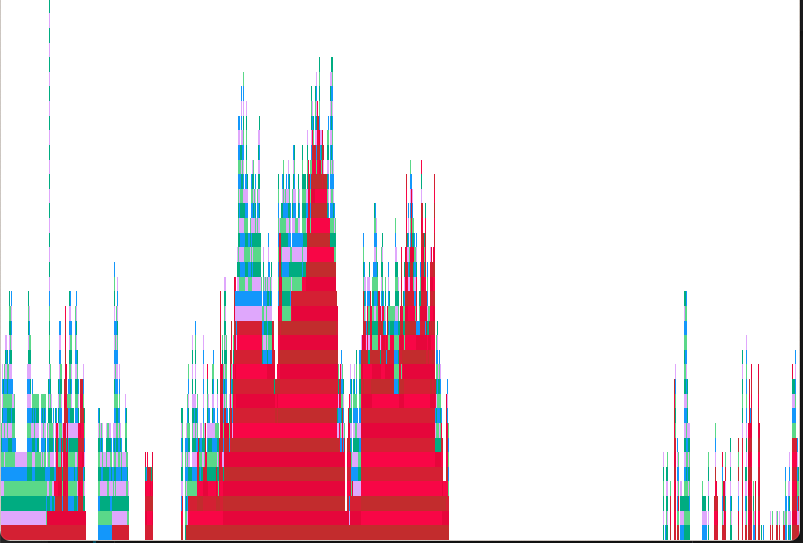

Latency
MathOptInterface suffers the "time-to-first-solve" problem of start-up latency.
This hurts both the user- and developer-experience of MathOptInterface. In the first case, because simple models have a multi-second delay before solving, and in the latter, because our tests take so long to run.
This page contains some advice on profiling and fixing latency-related problems in the MathOptInterface.jl repository.
Background
Before reading this part of the documentation, you should familiarize yourself with the reasons for latency in Julia and how to fix them.
- Read the blogposts on julialang.org on precompilation and SnoopCompile
- Read the SnoopCompile documentation.
- Watch Tim Holy's talk at JuliaCon 2021
- Watch the package development workshop at JuliaCon 2021
Causes
There are three main causes of latency in MathOptInterface:
- A large number of types
- Lack of method ownership
- Type-instability in the bridge layer
A large number of types
Julia is very good at specializing method calls based on the input type. Each specialization has a compilation cost, but the benefit of faster run-time performance.
The best-case scenario is for a method to be called a large number of times with a single set of argument types. The worst-case scenario is for a method to be called a single time for a large set of argument types.
Because of MathOptInterface's function-in-set formulation, we fall into the worst-case situation.
This is a fundamental limitation of Julia, so there isn't much we can do about it. However, if we can precompile MathOptInterface, much of the cost can be shifted from start-up latency to the time it takes to precompile a package on installation.
However, there are two things which make MathOptInterface hard to precompile.
Lack of method ownership
Lack of method ownership happens when a call is made using a mix of structs and methods from different modules. Because of this, no single module "owns" the method that is being dispatched, and so it cannot be precompiled.
This is a slightly simplified explanation. Read the precompilation tutorial for a more in-depth discussion on back-edges.
Unfortunately, the design of MOI means that this is a frequent occurrence: we have a bunch of types in MOI.Utilities that wrap types defined in external packages (for example, the Optimizers), which implement methods of functions defined in MOI (for example, add_variable, add_constraint).
Here's a simple example of method-ownership in practice:
module MyMOIstruct Wrapper{T} inner::Tendoptimize!(x::Wrapper) = optimize!(x.inner)end # MyMOImodule MyOptimizerusing ..MyMOIstruct Optimizer endMyMOI.optimize!(x::Optimizer) = 1end # MyOptimizerusing SnoopCompilemodel = MyMOI.Wrapper(MyOptimizer.Optimizer())julia> tinf = @snoopi_deep MyMOI.optimize!(model)InferenceTimingNode: 0.008256/0.008543 on InferenceFrameInfo for Core.Compiler.Timings.ROOT() with 1 direct childrenThe result is that there was one method that required type inference. If we visualize tinf:
using ProfileViewProfileView.view(flamegraph(tinf))we see a flamegraph with a large red-bar indicating that the method MyMOI.optimize(MyMOI.Wrapper{MyOptimizer.Optimizer}) cannot be precompiled.
To fix this, we need to designate a module to "own" that method (that is, create a back-edge). The easiest way to do this is for MyOptimizer to call MyMOI.optimize(MyMOI.Wrapper{MyOptimizer.Optimizer}) during using MyOptimizer. Let's see that in practice:
module MyMOIstruct Wrapper{T} inner::Tendoptimize(x::Wrapper) = optimize(x.inner)end # MyMOImodule MyOptimizerusing ..MyMOIstruct Optimizer endMyMOI.optimize(x::Optimizer) = 1# The syntax of this let-while loop is very particular:# * `let ... end` keeps everything local to avoid polluting the MyOptimizer# namespace# * `while true ... break end` runs the code once, and forces Julia to compile# the inner loop, rather than interpret it.let while true model = MyMOI.Wrapper(Optimizer()) MyMOI.optimize(model) break endendend # MyOptimizerusing SnoopCompilemodel = MyMOI.Wrapper(MyOptimizer.Optimizer())julia> tinf = @snoopi_deep MyMOI.optimize(model)InferenceTimingNode: 0.006822/0.006822 on InferenceFrameInfo for Core.Compiler.Timings.ROOT() with 0 direct childrenThere are now 0 direct children that required type inference because the method was already stored in MyOptimizer!
Unfortunately, this trick only works if the call-chain is fully inferrable. If there are breaks (due to type instability), then the benefit of doing this is reduced. And unfortunately for us, the design of MathOptInterface has a lot of type instabilities.
Type instability in the bridge layer
Most of MathOptInterface is pretty good at ensuring type-stability. However, a key component is not type stable, and that is the bridging layer.
In particular, the bridging layer defines Bridges.LazyBridgeOptimizer, which has fields like:
struct LazyBridgeOptimizer constraint_bridge_types::Vector{Any} constraint_node::Dict{Tuple{Type,Type},ConstraintNode} constraint_types::Vector{Tuple{Type,Type}}endThis is because the LazyBridgeOptimizer needs to be able to deal with any function-in-set type passed to it, and we also allow users to pass additional bridges that they defined in external packages.
So to recap, MathOptInterface suffers package latency because:
- there are a large number of types and functions
- and these are split between multiple modules, including external packages
- and there are type-instabilities like those in the bridging layer.
Resolutions
There are no magic solutions to reduce latency. Issue #1313 tracks progress on reducing latency in MathOptInterface.
A useful script is the following (replace GLPK as needed):
import GLPKimport MathOptInterface as MOIfunction example_diet(optimizer, bridge) category_data = [ 1800.0 2200.0; 91.0 Inf; 0.0 65.0; 0.0 1779.0 ] cost = [2.49, 2.89, 1.50, 1.89, 2.09, 1.99, 2.49, 0.89, 1.59] food_data = [ 410 24 26 730; 420 32 10 1190; 560 20 32 1800; 380 4 19 270; 320 12 10 930; 320 15 12 820; 320 31 12 1230; 100 8 2.5 125; 330 8 10 180 ] bridge_model = if bridge MOI.instantiate(optimizer; with_bridge_type=Float64) else MOI.instantiate(optimizer) end model = MOI.Utilities.CachingOptimizer( MOI.Utilities.UniversalFallback(MOI.Utilities.Model{Float64}()), MOI.Utilities.AUTOMATIC, ) MOI.Utilities.reset_optimizer(model, bridge_model) MOI.set(model, MOI.Silent(), true) nutrition = MOI.add_variables(model, size(category_data, 1)) for (i, v) in enumerate(nutrition) MOI.add_constraint(model, v, MOI.GreaterThan(category_data[i, 1])) MOI.add_constraint(model, v, MOI.LessThan(category_data[i, 2])) end buy = MOI.add_variables(model, size(food_data, 1)) MOI.add_constraint.(model, buy, MOI.GreaterThan(0.0)) MOI.set(model, MOI.ObjectiveSense(), MOI.MIN_SENSE) f = MOI.ScalarAffineFunction(MOI.ScalarAffineTerm.(cost, buy), 0.0) MOI.set(model, MOI.ObjectiveFunction{typeof(f)}(), f) for (j, n) in enumerate(nutrition) f = MOI.ScalarAffineFunction( MOI.ScalarAffineTerm.(food_data[:, j], buy), 0.0, ) push!(f.terms, MOI.ScalarAffineTerm(-1.0, n)) MOI.add_constraint(model, f, MOI.EqualTo(0.0)) end MOI.optimize!(model) term_status = MOI.get(model, MOI.TerminationStatus()) @assert term_status == MOI.OPTIMAL MOI.add_constraint( model, MOI.ScalarAffineFunction( MOI.ScalarAffineTerm.(1.0, [buy[end-1], buy[end]]), 0.0, ), MOI.LessThan(6.0), ) MOI.optimize!(model) @assert MOI.get(model, MOI.TerminationStatus()) == MOI.INFEASIBLE returnendif length(ARGS) > 0 bridge = get(ARGS, 2, "") != "--no-bridge" println("Running: $(ARGS[1]) $(get(ARGS, 2, ""))") @time example_diet(GLPK.Optimizer, bridge) @time example_diet(GLPK.Optimizer, bridge) exit(0)endYou can create a flame-graph via
using SnoopCompiletinf = @snoopi_deep example_diet(GLPK.Optimizer, true)using ProfileViewProfileView.view(flamegraph(tinf))Here's how things looked in mid-August 2021:

There are a few opportunities for improvement (non-red flames, particularly on the right). But the main problem is a large red (non-precompilable due to method ownership) flame.